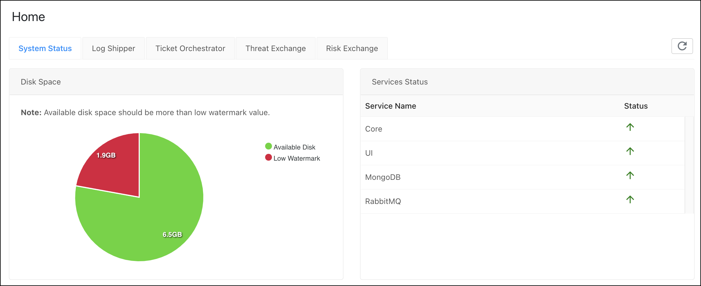
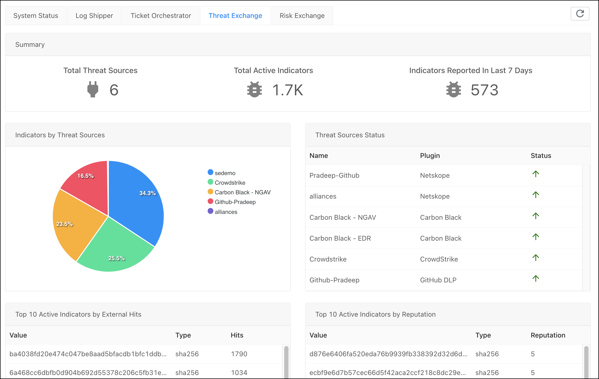
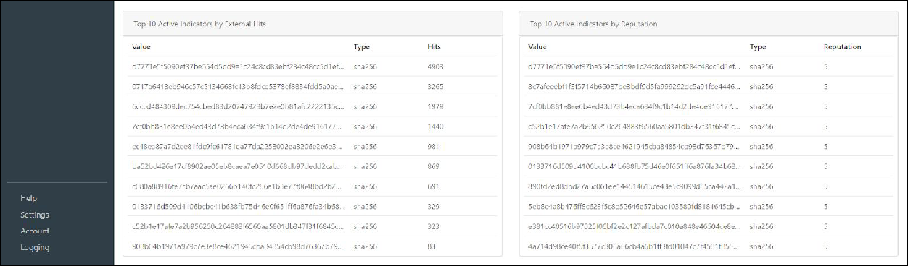
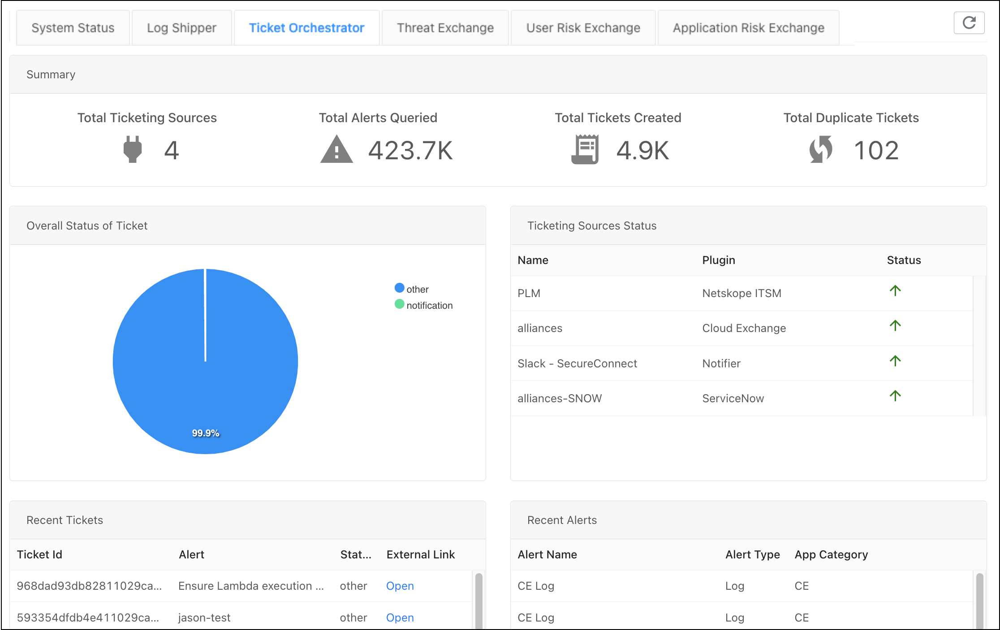
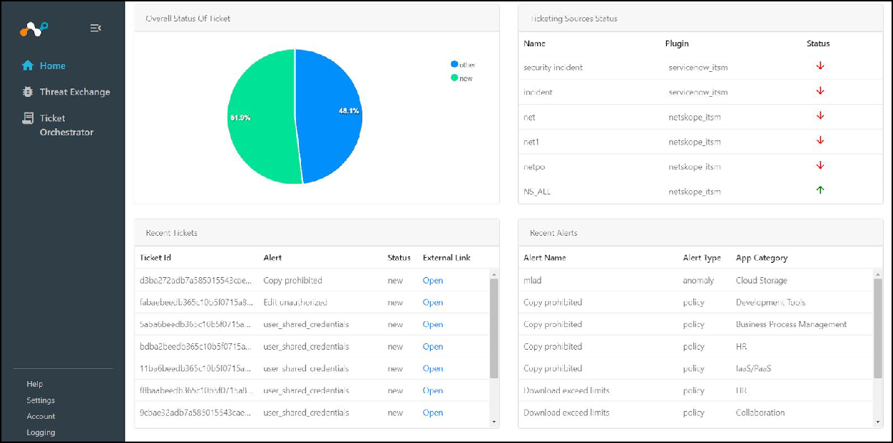
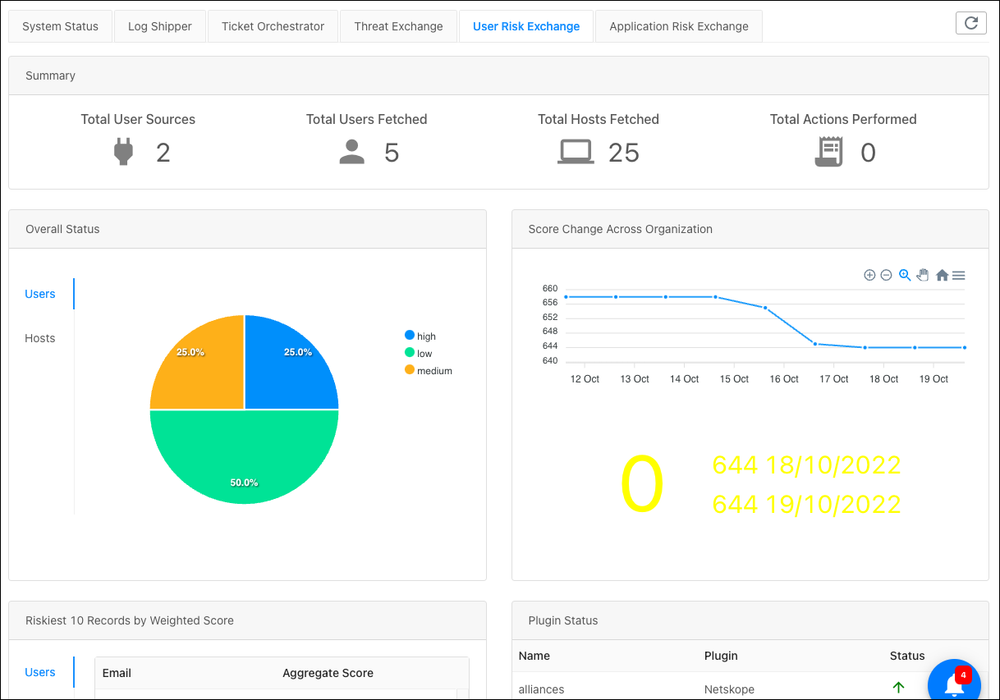
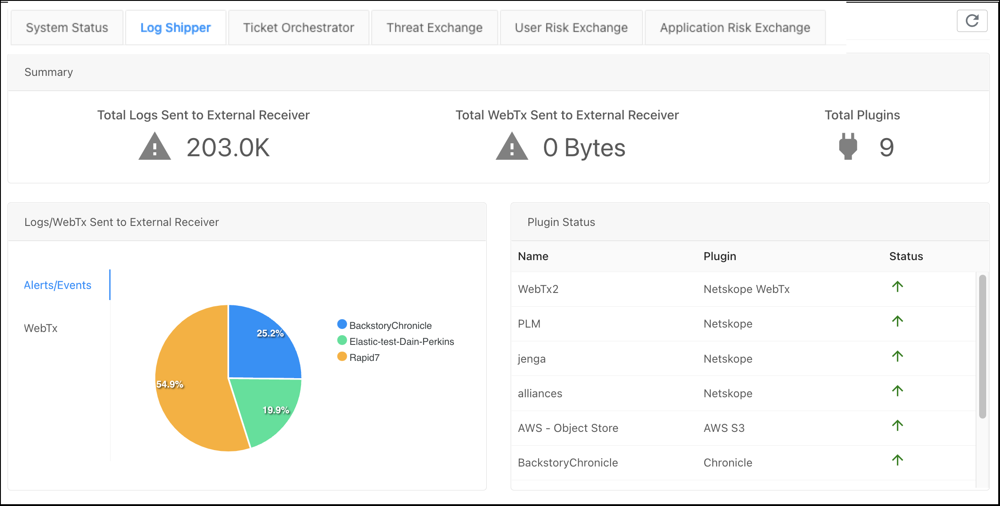

Explore the Dashboards
Both Admins and Users can view the dashboards. The dashboards provide a high level overview of each module and provide a view of user activity. The Home page has tabs for each of the enabled modules.
|  |
Threat Exchange Dashboard
The Threat Exchange Dashboard opens by default (when enabled) and contains the following information:
|  |
Total Threat Sources: Shows the total number of configured and active plugins contributing data to Threat Exchange.
Total Active Indicators: Shows the number of total active (not disabled) indicators in the Threat Exchange database.
Indicators Reported In Last 7 Days: Shows the number of active (not disabled) indicators delivered to Threat Exchange in previous days. This is a rolling count as of the time the dashboard is viewed.
Note
Although an indicator could have been recently obtained by Threat Exchange, no event will contribute to the count if the metadata timestamp delivered with the IoC entry is from a period earlier than seven days.
Indicators by Threat Sources: Shows the relative contribution, in record counts, from each connected plug-in to the entire active Threat Exchange database in a pie chart.
Threat Sources Status: Shows the up (green up arrow) or down (red down arrow) state of configured plugins.
Top 10 Active Indicators by External Hits: Shows the top 10 indicators that all of the plugins have matched against. For example, the value started with d7771 has been seen by all the non-Netskope connectors a total of 4903 times, indicating that it is appearing the most frequently in the customer IT stack.
 Top 10 Active Indicators by Reputation: Shows the sorted count of the top 10 active indicators by reputation. Reputation is configured per plugin and is applied to all indicators received from that plugin, although API commands can be used to overwrite the setting for any given IoC entry. This metadata is only used for filtering purposes. Regardless of reputation, the last IOC update takes affect.
Ticket Orchestrator Dashboard
Click the Ticket Orchestrator tab.
The Ticket Orchestrator Dashboard contains the following information:
|  |
Total Ticketing Sources: Shows the total number of configured and active plugins contributing ticketing events to Ticket Orchestrator.
Total Alerts Queried: Shows total active alerts in the Ticket Orchestrator database. Not every alert will create a ticket if the option to mute has been enabled.
Total Duplicate Alerts: Shows the number of duplicate alerts. Alerts that are shown here are being deduplicated automatically by Ticket Orchestrator.
Total Tickets Created: Shows the total number of tickets and/or notifications created by Ticket Orchestrator across all of the connected ticketing systems.
Overall Status Of Ticket: Shows the relative proportion of tickets in a pie chart.
Ticketing Sources Status: Shows the up (green up arrow) or down (red down arrow) state of configured plugins.
 Recent Tickets: Shows the last 10 tickets Ticket Orchestrator created with the ITSM ticket ID, the Netskope alert type, the ticket status, and a link to browse to the ticket in the connected ITSM system. Only alerts that match a ticket flow will create a ticket.
Recent Alerts: Shows the list of ten (10) most recent alerts reported by the Netskope tenant, with alert name, the type of alert (one of 8 categories Netskope uses), and the associated event’s application category. For example, the widget shows that an alert matched a machine learning finding of an anomalous behavior associated with activity in a cloud storage SaaS application. Ticket Orchestrator is not a SIEM; more information can be found in the Netskope tenant SkopeIT logs.
Risk Exchange Dashboard
Click the Risk Exchange tab.
The Risk Exchange Dashboard contains the following information:
|  |
Total User Sources: How many vendor plugins have been configured and connected.
Total Users Fetched: How many users have been identified as having noteworthy risk scores.
Total Hosts Fetched: How many devices have been identified as having noteworthy risk scores.
Overall Status: Percentage breakdown by risk category (critical, high, medium, low) of all fetched users or devices.
Score Change Across Organization: Absolute positive or negative change of the average score across all users between yesterday and today.
Riskiest 10 Records by Weighted Score: Riskiest 10 users or devices among all those fetched.
Plugin Status: Indicates if the plugin is successfully polling the vendor’s system or not.
Log Shipper Dashboard
Click the Log Shipper tab.
The Log Shipper Dashboard contains the following information:
|  |
Total Logs Ingested: Total number of logs retrieved from the Netskope tenant.
Total Plugins: Total number of systems Log Shipper is sending logs to PLUS the polled Netskope tenant(s). For example, 2 would mean that there is at least one Netskope tenant being polled.
Logs Ingested: Percentage breakdown by log receiver. If there were two log receivers each configured to receive the same logs, each would show 50% of the circle.
Plugin Status: Indicates if the plugin is successfully polling the vendor’s system or not (when configured to communicate over TLS or TCP).